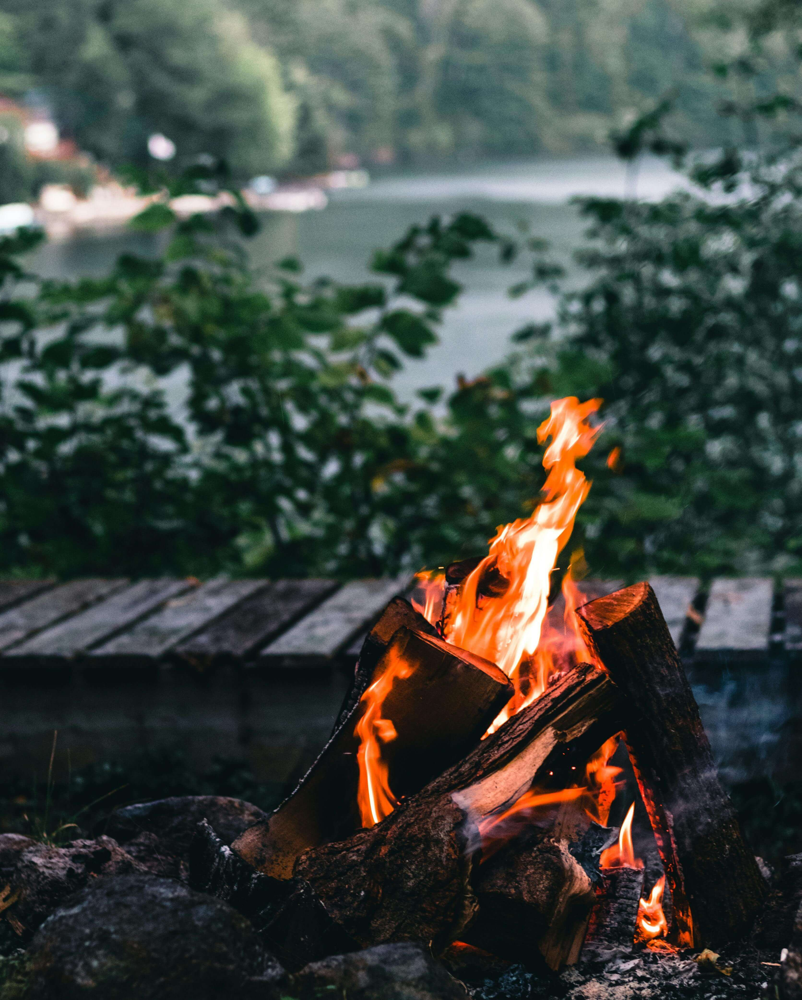
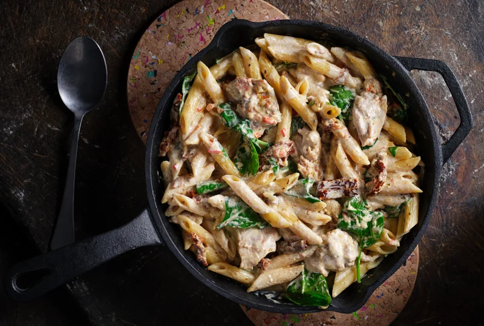
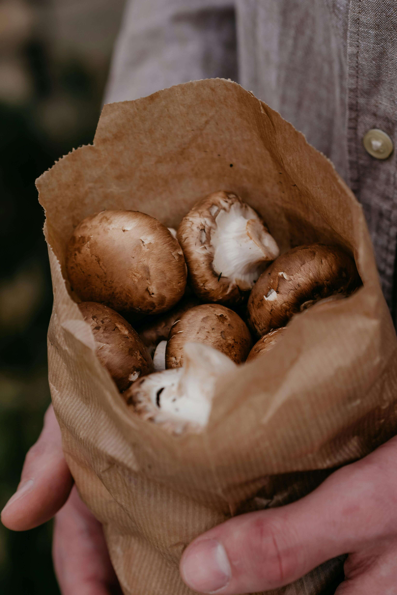
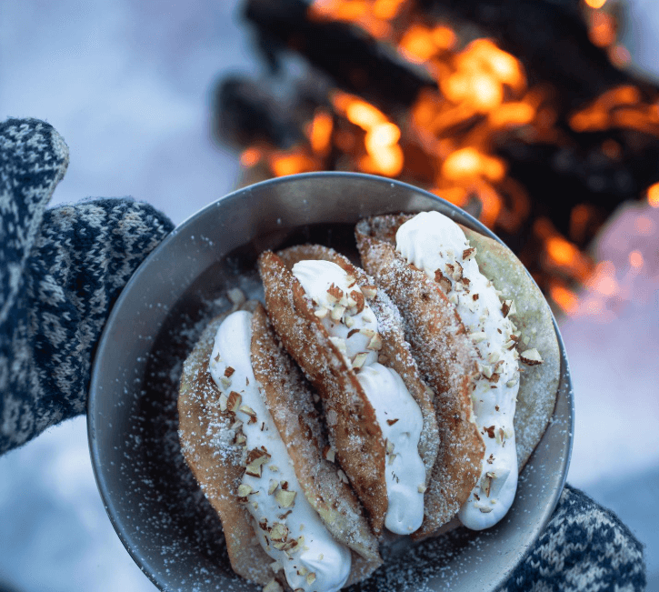
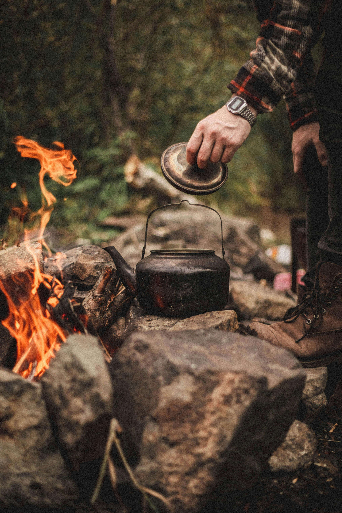

Cedar-Planked Trout with Wild Herbs:
A Lakeside Tradition
The morning sun dances across Lake Superior as fishing guide Tom Nakamura prepares what he calls "the most peaceful meal on earth"—fresh trout cooked on cedar planks over an open fire, seasoned with herbs gathered from the shoreline.
"Indigenous peoples have cooked fish this way for thousands of years," Nakamura explains, soaking untreated cedar planks in lake water. "The wood steams from below while the fire kisses from above. The fish stays incredibly moist."
This technique transforms a simple catch into something transcendent, filling the air with aromatic smoke while creating a natural, non-stick cooking surface that infuses subtle woodsy flavors.
What You'll Need:
-
2 untreated cedar planks, soaked 2+ hours
-
2 whole trout, cleaned (12-14 inches each)
-
Fresh wild herbs: dill, chives, or wild garlic
-
2 lemons, sliced
-
3 tablespoons olive oil
-
Coarse sea salt and black pepper
-
Stable fire with good coals
The Gathered Method:
While the planks soak, walk the shoreline collecting herbs. "Look for the bright green shoots of wild chives near rocky areas," advises Nakamura. "Crush a leaf between your fingers—the oniony scent tells you it's right."
Build your fire and let it burn down to glowing coals with minimal flame. You want consistent, medium heat that won't char the cedar.
Pat fish completely dry and brush inside and out with olive oil.
Season generously with salt and pepper. Stuff the cavity with lemon slices and fresh herbs—this is where the magic happens.
Place fish on the soaked planks and set them on your fire grate, about 8 inches above the coals. The planks will begin to steam and smoke—this is exactly what you want.
"This is meditation time," says Nakamura's daughter Amy, who learned the technique during childhood camping trips. "You tend the fire, watch the sunset, and just breathe. The fish tells you when it's ready."
Cook 15-20 minutes without flipping. The fish is done when it flakes easily at the thickest part. The cedar creates a natural serving platter—no cleanup required.
Serve immediately with gathered herbs sprinkled on top and lemon wedges on the side. The combination of wood smoke, fresh herbs, and perfectly cooked fish creates a meal that tastes like pure wilderness.

Creamy Chicken Pasta
Hearty and family-friendly
Did someone say winter break? What could be better than making this creamy pasta outdoors? Bring the kids along - this pasta suits both big and small eaters, or alternatively, this is also a perfect meal for a forest date!
Ingredients (2 servings)
For the chicken:
- 2 chicken fillets
- 1 tsp paprika powder
- 1 tsp onion powder
- 1 tsp garlic powder
- 1 tsp salt
- 1 tsp dried basil
- 1 tbsp oil
For the sauce:
- 1 tbsp butter
- 1 shallot
- 2 garlic cloves
- 1 tbsp tomato paste
- 2 tbsp bruschetta mix (optional)
- 1/2 dl sun-dried tomatoes, sliced (including oil)
- 3 dl heavy cream
- 1 chicken bouillon cube
- 65 grams baby spinach
- 200 grams fresh pasta (or cooked pasta)
- Parmesan cheese
- Salt and pepper to taste
The Gathered Method:
Begin by preparing the chicken—slice the fillets into strips, then mix with oil and all the marinade spices, letting it rest for a while. Next, heat oil in a frying pan or on a cooking plate and fry the chicken until it develops a beautiful golden surface before setting it aside.
In the same pan, add butter and fry the shallot until golden, then build the flavor by adding garlic, tomato paste, bruschetta mix, and sun-dried tomatoes. Season with salt and pepper to taste. Create the creamy base by adding the cream, bouillon cube, and spinach, then grate in some parmesan cheese.
When the cream has thickened slightly, combine the pasta along with 1 dl pasta water (if using fresh pasta, you can use hot cooking water instead). Once the pasta has absorbed into the sauce, add the final touches by grating plenty of parmesan over the pasta and seasoning with salt, pepper, and optionally a little chili.
Now just serve it to someone you want to impress or someone you care about very much!

Creamy Mushroom Pasta
An autumn pasta? Here's the recipe, perfect if you're 2-3 people and want to serve something delicious, warm, and satisfying!
Ingredients (2-3 servings)
- 800 grams mushrooms (any variety you prefer)
- 25 grams butter
- 2 garlic cloves
- 2 shallots
- 1 mushroom boullion cube
- 3 dl heavy cream
- Fresh parsley
- Salt
- Pepper
- Parmesan cheese
- Fresh or cooked pasta
The Gathered Method:
Start by cooking the mushrooms in a dry pan until they release all their water. Then add butter, shallots, and garlic, frying until the onions soften. Build the base by adding chopped parsley, mushroom bouillon, salt, and pepper—fry for a while before pouring in the heavy cream.
When the sauce is almost ready, combine it with the cooked pasta and a little pasta water. Taste and adjust the final seasoning with salt and pepper, then sprinkle over grated parmesan.
Eat and enjoy! Bon appétit!

Outdoor Pancakes
"Semla-style"
Pancakes in the forest or by the lake? Yes please! Absolutely unbeatable in the forest - take the chance to make this in nature, bring a group and enjoy this together!
A "semla" is a traditional Swedish cardamom bun filled with almond paste and whipped cream, typically enjoyed during the month of February.
This outdoor version transforms the beloved pastry into a campfire-friendly pancake experience.
Ingredients (2-3 servings)
Pancakes
- 2 eggs
- 2 dl milk
- 2 dl flour
- 2 tsp baking powder
- 1 tbsp sugar
- 1 tsp ground cardamom
- A pinch of salt
- Butter for frying
Instructions: Whisk together the eggs, milk, sugar, cardamom, and salt in a bowl. Add the flour and baking powder, then whisk until smooth.
Tip: This batter is perfect to prepare at home! Pour it into a thermos or a bottle, and when you're out in the forest just shake it up and pour straight into the pan for that real outdoor vibe.
Mascarpone Cream
- 250g mascarpone
- 2 dl heavy cream
- 1 tbsp powdered sugar
- 1 tsp ground cardamom seeds
Instructions: Whip the cream and set aside, then whip the mascarpone with powdered sugar and cardamom. Finally, fold in the whipped cream.
Almond Paste
- 200 grams toasted almonds
- 1 dl powdered sugar
- 1 pinch salt
- 1 tsp ground cardamom seeds
- 1-2 dl water
Instructions: Blend the almonds to your preferred consistency, then add the remaining ingredients. Vary the amount of water depending on how thick you prefer it.
The Gathered Method:
Begin by making the pancakes, heat a pan with a good piece of butter and pour in small rounds of batter. Cook gently until bubbles appear on top, then flip and cook the other side until golden. Serve topped with mascarpone cream, almond paste, and toasted almonds.
Now eat, enjoy, and thank us later!
P.S. The mascarpone cream and almond paste make enough for several portions, so you can serve many people. Just increase the eggs and cream for the toast to serve more people.

Campfire Coffee and Swedish Fika
Nothing beats the ritual of brewing coffee over an open fire and sharing Swedish fika in nature!
This is more than just coffee - it's about slowing down, connecting with friends, and savoring simple pleasures in the great outdoors.
Swedish Cardamom Buns: Start with these at home - perfect companions to campfire coffee for the ultimate fika experience.
Ingredients:
- 500g flour
- 250ml milk
- 75g butter
- 25g fresh yeast (or 12g dry yeast)
- 75g sugar
- 1 tsp salt
- 2 tsp ground cardamom
- 1 egg for brushing
- Pearl sugar for sprinkling
Filling:
- 100g soft butter
- 75g sugar
- 2 tbsp ground cardamom
Instructions: Begin by warming the milk to lukewarm and dissolving the yeast, then mix with flour, melted butter, sugar, salt, and cardamom.
Knead until smooth and let rise for 1 hour.
While the dough rises, prepare the filling by mixing soft butter, sugar, and cardamom.
Roll the risen dough into a rectangle, spread the filling evenly, then fold and cut into strips. Twist each strip and place in muffin tins for the final 30-minute rise. Brush with beaten egg, sprinkle with pearl sugar, and bake at 200°C for 12-15 minutes until golden.
Once cooled, pack in a basket for your outdoor adventure!
Traditional Campfire Coffee (Kokkaffe)
- 1 liter water
- 6-8 tbsp coarsley ground coffee
- Pinch of salt (optional, reduces bitterness)
- Cold water for settling
Instructions: Bring water to a rolling boil in a heavy-bottomed pot or a coffe kellte over the campfire, then remove from direct heat and add the ground coffee, stirring once.
Let it brew for 4-5 minutes while the coffee grounds float to the surface, then add a splash of cold water to help settle the grounds to the bottom. Carefully pour the coffee, leaving the grounds in the pot, and serve in enamel mugs for the full outdoor experience!
The Gathered Method:
For the perfect fika-moment: bring a cozy blanket, good company (or peaceful solitude), and time to truly savor the moment.
Pour the steaming coffee into your cups, break open a warm cardamom bun, and take in the sounds of nature around you. This is fika - the Swedish art of taking a break, enjoying simple pleasures, and being present in the moment.
There's something magical about the combination of crackling fire, aromatic coffee, sweet cardamom, and the vastness of nature. It's not just about the food and drink - it's about creating moments that feed the soul.
Perfect for outdoor cooking adventures or cozy indoor dinners. These recipes bring warmth and comfort to any gathered table.